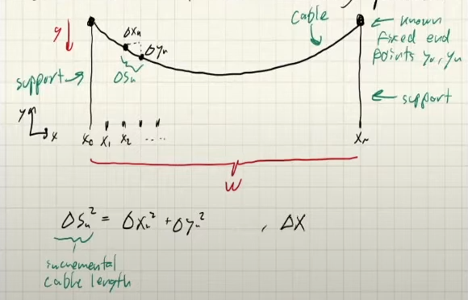

Calculus of Variations
I will yoink most of the notes from Zack Manchester’s Robot Dynamics 2022 class.
Calculus
\[\begin{align*} \min_x f(x), \space f: \mathbb{R}^n \to \mathbb{R} \\ x \in \mathbb{R}^n \end{align*}\]We often want to solve “infinite-dimensional” optimization problems, where the decision variable is a function. How do we get to this point?
Let \(y(t)\) be such that \(y: [0,T] \to \mathbb{R}\) and \(x \in \mathbb{R}^n\), then \(x = \begin{bmatrix}y_1 && y_2 && ... && y_n \end{bmatrix}\).
If we let \(n \to \infty\), then we can get something “infinite-dimensional”. Also we recover the continuous function \(y(t)\).
Example:
\[f(x) = \frac{1}{N}\mathbf{x}^T \mathbf{x} = \sum_{n=1}^N \frac{1}{N} y_n^2\]Functions of functions are called functionals.
This is a cost functional. \(\begin{equation*} \min_x f(x) = \frac{1}{N} \mathbf{x}^T \mathbf{x} = F(y(t)) = \int_0^1 y(t)^2 \space dt \end{equation*}\)
Normally what we do is…
\[\begin{align*} \frac{\partial f}{\partial x} = \frac{2}{N}x^T = 0 \\ x^* = 0 \end{align*}\]We can look at this in components. We have to use the first-order approximation (linearization).
\[\begin{align*} \min_x \sum_{n=1}^N \frac{1}{N} y_n^2 \\ F(y(t) + \Delta y(t)) &\approx F(y) + \frac{\partial F}{\partial y}(\Delta y) \\ &= \int_0^1 y(t)^2 \space dt + \int_0^1 2y(t) \Delta y(t) \space dt \end{align*}\]At a minimum, the first-order term must be zero for all \(\Delta y(t)\). This implies that \(y(t) = 0\).
Standard Notation for \(Delta\)
A variation of a functional \(\delta F\) is … the first-order term in the Taylor expansion of \(F(y + \delta y)\) around \(y\).
\[\begin{align*} \delta F = \int_0^1 2y(t) \delta y(t) \space dt \end{align*}\]It is not common to write \(\frac{\delta F}{\delta y}\) to denote the functional derivative.
More interesting example (catenary)

- g: acceleration due to gravity
- \(\Delta s_n\): incremental cable length.
Total cable length is \(\ell\): \(\begin{align*} \ell = \sum_{n=1}^{N-1} \Delta s_n = \sum_{n=1}^{N-1} \sqrt{\Delta x_n^2 + \Delta y_n^2} = \sum_{n=1}^{N-1} \sqrt{1 + \left(\frac{\Delta y_n}{\Delta x_n}\right)^2} \Delta x_n \end{align*}\)
Total mass:
\[\begin{align*} m = \sum_{n=1}^{N-1} \rho \Delta s_n \\ \rho = \frac{m}{\ell} \end{align*}\]If we minimize the potential energy, we get the shape of the cable.
\[\begin{align*} V &= \sum_{n=1}^{N-1} \rho \Delta s_n g(\frac{y_{n+1} + y_n}{2}) \\ &= \sum_{n=1}^{N-1} \rho g \frac{y_{n+1} + y_n}{2} \Delta x \sqrt{1 + \left(\frac{\Delta y_n}{\Delta x_n}\right)^2} \end{align*}\]Optimization will have a constraint:
\[\begin{align*} \min_{y_{1:N-1}} \sum_{n=1}^{N-1} \rho g \frac{y_{n+1} + y_n}{2} \Delta x \sqrt{1 + \left(\frac{\Delta y_n}{\Delta x_n}\right)^2} \\ \text{s.t. } \sum_{n=1}^{N-1} \Delta s_n = \ell \end{align*}\]NOTE that \(y_0, y_N\) are fixed (boundary conditions).
Generic version:
\[\begin{align*} \min_x \sum_{n=1}^{N-1} f(y_n, y_{n+1}) \\ \text{s.t. } \sum_{n=1}^{N-1} c(y_n) = 0 \\ L(x,\lambda) = \sum_{n=1}^{N-1} f(y_1, ..., y_{n-1}) + \lambda c(y_n) \end{align*}\]Last equation is the Lagrangian.
KKT Conditions:
\[\begin{align*} \frac{\partial L}{\partial \delta x} &= \sum_{n=1}^{N-1} D_1 f(y_n, y_{n+1}) \Delta y_n \\ &+ D_2 f(y_n, y_{n+1}) \Delta y_{n+1} \\ &+ \lambda D c(y_n) \Delta y_n \\ &= 0 \space \forall \Delta x \\ \frac{\partial L}{\partial \lambda} &= c(x) \\ &= 0 \end{align*}\]If we assume endpoints are fixed then we will get for our first-order necessary condition:
\[\begin{align*} \frac{\partial L}{\partial \delta x} &= \sum_{n=1}^{N-1} D_2 f(y_{n-1}, y_n) \Delta y_n + D_1 f(y_n, y_{n+1}) \Delta y_n + \lambda D c(y_n) \Delta y_n \\ &= (D_2 f(y_{n-1}, y_n) + D_1 f(y_n, y_{n+1}) + \lambda D c(y_n)) \Delta y_n &= 0 \end{align*}\]The punch line is…
\[\begin{align*} D_2 f(y_{n-1}, y_n) + D_1 f(y_n, y_{n+1}) + \lambda D c(y_n) = 0 \end{align*}\]Now we can look at the limit \(N \to \infty\). We get…
\[\begin{align*} \min_{y(t)} \int_0^T f(y(t), \dot y(t)) \space dt \\ \text{s.t. } \int_0^T s(y(t)) \space dt = \ell \\ L(y(t), \lambda) = \int_0^T f(y(t), \dot y(t)) + \lambda s(y(t)) \space dt \end{align*}\]KKT Conditions in Variational Calculus:
\[\begin{align*} \frac{\partial L}{\partial y(t)}[\Delta y(t)] &= \int_0^T D_1 f(y(t), \dot y(t)) \Delta y(t) \\ &+ D_2 f(y(t), \dot y(t)) \Delta \dot y(t) \\ &+ \lambda D s(y(t)) \Delta y(t) \space dt \\ &= 0 \space \forall \Delta y(t) \end{align*}\] \[\begin{align*} \frac{\partial L}{\partial \lambda}[\Delta y] = \int_0^T c(y(t)) \space dt = 0 \end{align*}\]Similar to discrete case, we want to factor out \(\Delta y(t)\) to derive local optimality conditions.
The key move is integration by parts which is the common trick for variational calculus.
\[\begin{align*} \frac{d}{dt}(u(t) \star v(t)) &= \dot u(t) \star v(t) + u(t) \star \dot v(t) \\ u(t) \star v(t) \Big|_0^T &= \int_0^T \dot u(t) \star v(t) \space dt + \int_0^T u(t) \star \dot v(t) \space dt \\ \int_0^T u(t) \star \dot v(t) \space dt &= u(t) \star v(t) \Big|_0^T - \int_0^T \dot u(t) \star v(t) \space dt \end{align*}\]